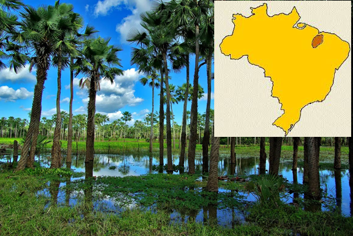
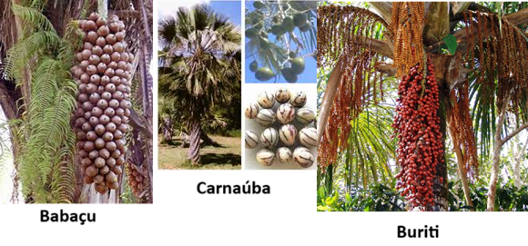
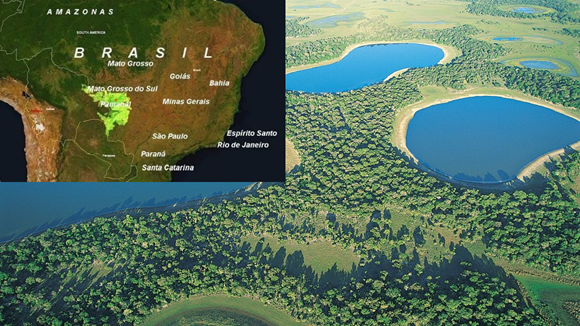
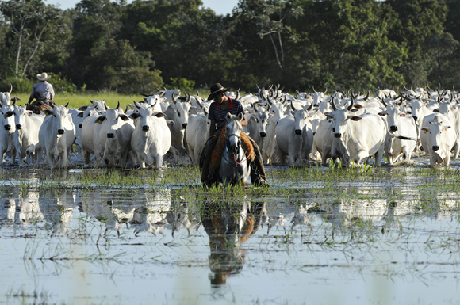
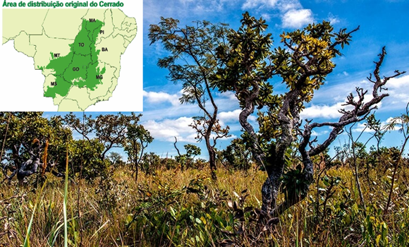
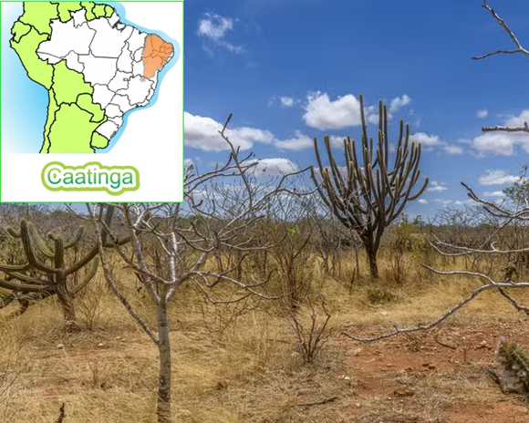
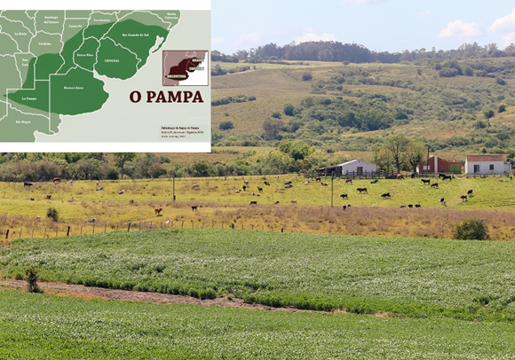

Conteúdo: Mata dos Cocais, Pantanal, Cerrado, Caatinga, Pampas.
Objetivo: Destacar as principais características das vegetações do Brasil: Mata dos Cocais, Pantanal, Cerrado, Caatinga, Pampas e os impactos da interferência humana nesses
domínios.
Digite seu nome
Introdução
Na aula passada, entramos em contato com os principais problemas
climáticos do Brasil e sobre a influência das massas de ar, intervenções no relevo para tratar dessa
questão.
Hoje, vamos relacionar o principal parceiro do clima: a vegetação em nosso país. Nessa primeira parte vamos
conhecer a Floresta amazônica, a Mata Atlântica e a Mata de Araucárias e seus problemas.
O Brasil é conhecido pela exuberância de sua vegetação, mas também pela sua ação predatória ao longo dos
séculos.
Mata dos Cocais

Fonte: https://conhecimentocientifico.r7.com
Localização e Características Gerais:
A Mata dos Cocais é uma região de transição localizada entre a Floresta Amazônica (a oeste), a Caatinga (a
leste) e o Cerrado (ao sul). Ela se estende pelos estados do Maranhão, Piauí, partes do Ceará e norte do
Tocantins, sob o domínio do clima tropical.
Vegetação Predominante:

Predominam as palmáceas, sendo as espécies mais conhecidas:
Babaçu: Uma palmeira cuja extração do coco é fundamental para a economia local.
Carnaúba: Surge ao longo dos rios e terrenos alagados, conhecida por suas folhas
cerosas utilizadas na produção de cera.
Buriti: Outra espécie de palmeira, típica de áreas alagadas, cujos frutos e palmeiras
são usados de diversas formas.
Interferência Humana e Impactos:
Extrativismo Vegetal: A extração do coco de babaçu é uma atividade tradicional e econômica
crucial para a região, alimentando tanto o mercado local quanto a indústria de cosméticos.
Indústria de Cosméticos: A região é notável pela exploração de recursos naturais para a
produção de cosméticos, especialmente aqueles derivados do coco de babaçu.
Desmatamento e Degradação Ambiental: A pressão econômica para a extração de recursos e a
expansão agrícola tem levado ao desmatamento e à degradação do ecossistema da Mata dos Cocais.
Sustentabilidade: Iniciativas de manejo sustentável e conservação são essenciais para
mitigar os impactos da exploração humana e garantir a preservação da biodiversidade local.
Pantanal

Fonte: Wikipedia.
Localização e Características Gerais:
O Pantanal é a maior planície alagada do mundo, situado principalmente nos estados do Mato Grosso e Mato
Grosso do Sul, além de partes menores na Bolívia e Paraguai. Este bioma é caracterizado por sua vasta rede
de rios, lagoas e áreas alagadiças.
Vegetação Predominante:
A vegetação do Pantanal é uma combinação de espécies de cerrado, floresta amazônica e chaco boliviano,
incluindo gramíneas, arbustos e árvores esparsas.
Interferência Humana e Impactos:
Pecuária Extensiva: A criação de gado é a principal atividade econômica, causando alterações
no solo e na vegetação.

Fonte: www.brasil.com
Queimadas e Desmatamento: Práticas de manejo inadequado e queimadas sazonais contribuem para
a degradação do ecossistema.
Turismo Sustentável: A promoção de turismo ecológico tem surgido como uma alternativa
econômica e ambientalmente sustentável.
Cerrado

Fonte: Organizado pelo autor.
Localização e Características Gerais:
O Cerrado, o segundo maior bioma da América do Sul, cobre aproximadamente 25% do território brasileiro,
incluindo Goiás, Mato Grosso, Mato Grosso do Sul, Minas Gerais, e partes de outros estados.
Vegetação Predominante:
A vegetação é composta por uma mistura de gramíneas, arbustos e árvores esparsas adaptadas ao clima
sazonalmente seco.
Interferência Humana e Impactos:
Agronegócio: A expansão da agricultura e pecuária tem levado ao desmatamento extensivo do
Cerrado.
Perda de Biodiversidade: A destruição do habitat natural ameaça inúmeras espécies endêmicas.
Iniciativas de Conservação: Programas de conservação e recuperação de áreas degradadas são
essenciais para preservar este bioma único.
Caatinga

Localização e Características Gerais:
A Caatinga é um bioma exclusivo do Brasil, cobrindo cerca de 10% do território nacional, predominantemente no Nordeste.
Vegetação Predominante:
Caracteriza-se por uma vegetação xerófila, adaptada ao clima semiárido, incluindo cactos, arbustos espinhosos e árvores de pequeno porte.
Interferência Humana e Impactos:
Agricultura de Subsistência: Práticas agrícolas inadequadas contribuem para a degradação do solo.
Desertificação: A exploração excessiva e as mudanças climáticas intensificam os processos de desertificação.
Projetos de Sustentabilidade: Iniciativas de manejo sustentável e recuperação ambiental são vitais para a regeneração do bioma.
Pampas

Localização e Características Gerais:
Os Pampas estão localizados principalmente no Rio Grande do Sul, estendendo-se até o Uruguai e Argentina. Este bioma é caracterizado por vastas planícies cobertas por gramíneas.
Vegetação Predominante:
A vegetação dos Pampas é composta principalmente por gramíneas e poucas árvores, adaptadas ao clima temperado com estações bem definidas.
Interferência Humana e Impactos:
Pecuária e Agricultura: A principal atividade econômica, que impacta o solo e a vegetação.
Erosão do Solo: O manejo inadequado das pastagens pode levar à erosão e perda de fertilidade do solo.
Conservação de Pastagens Naturais: Programas de manejo sustentável são necessários para manter a saúde ecológica do bioma.
Não existe pergunta boba! A Ciência é feita de perguntas!
P:
Qual é a situação atual do Cerrado em relação à sua cobertura original e qual é o impacto do
agronegócio nessa região?
R:
O Cerrado atualmente conta com algo em torno de 48% de sua cobertura original. O agronegócio,
especialmente o plantio da soja, tem desempenhado um papel significativo na transformação dessa região.
A expansão das fronteiras agrícolas tem levado à conversão de matas nativas em grandes áreas de
monocultura, conhecidas como desertos verdes, o que resulta na perda de biodiversidade e na degradação
dos ecossistemas naturais do Cerrado.
P:
Como o clima e a pluviosidade do Pantanal influenciam as inundações periódicas, e quais são as
causas dessas inundações?
R:
No Pantanal, os índices de pluviosidade são inferiores aos verificados na maior parte da região
Centro-Oeste. As inundações periódicas nessa região são mais justificadas pela topografia da Bacia do
rio Paraguai do que pelo volume das chuvas. As chuvas, concentradas no verão, juntamente com a
topografia plana da bacia, resultam em extensas áreas alagadas, que são características do Pantanal.
P:
Quais são os principais conflitos que surgem no Cerrado e Pampas devido às práticas agrícolas e ao
uso da terra?
R:
No Cerrado, os principais conflitos envolvem camponeses e pequenos agricultores que enfrentam a expansão
do agronegócio, que muitas vezes leva à desapropriação de terras e à degradação ambiental. Nos Pampas, a
vegetação é composta por gramíneas em uma área de clima subtropical, e a eliminação da cobertura vegetal
para a prática agrícola pode levar a processos de arenização, que é a transformação do solo em areia.
Essa degradação do solo pode reduzir a produtividade agrícola e causar conflitos entre agricultores e
defensores da conservação ambiental.
Agora é com você!
Atividade: O livro das perguntas
Instruções:
Forme um grupo com 5-6 estudantes;
Cada grupo deve escolher um tópico abaixo e desenvolver três questões relacionadas a ele.
Reflita criticamente e a explore diferentes perspectivas.
Pense em processos, causas e consequências
Faça questões desafiadoras sobre a relação entre o ser humano e a vegetação.
Tempo da atividade: 15 minutos.
Exemplo de tópico
Motivações e Interesses:
- Como as ambições individuais e coletivas podem levar à degradação da vegetação?
- Em que medida a busca por recursos naturais afeta a preservação da vegetação?
VESENTINI, José William. Geografia: o mundo em transição. Ensino médio. 2. ed. - São
Paulo: Ática, 2013.
VOGLER, Christopher. A jornada do escritor: estruturas míticas para escritores.
Tradução de Ana Maria Machado. 2.ed. Rio de Janeiro: Nova Fronteira, 2006.
SKOLNICK, Evan. Video game storytelling: what every developer needs to know about
narrative techniques.New Yoirk: Watson-Guptill, 2014.